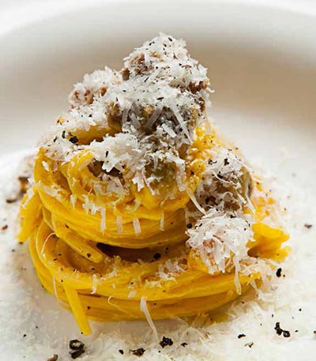

Carbonara

Carbonara by Luciano Monosilio
Description
The best carbonara in Italy? Though there is quite a bit of debate on the subject, there are two names that always stand out in the “top ten” versions of carbonara in Italy - two names who have created more than just a signature dish out of the traditional recipe, but a lifestyle, too.
The two subjects? Alessandro Pipero, maître and owner of Pipero, and Luciano Monosilio, his young chef - working side by side for years at the starred restaurant in Rome.
Their carbonara is a legend, but this is an even further embellished version - if it was possible to make it any better - with the unusual extra touch of grappa. The grappa they use? Prime Uve Bianche from the Bonaventura Maschio distillery - where they distill the white grapes for a fruity, delicate and floral flavor that pairs wonderfully with classic carbonara. Here is the recipe:
Ingredients:
- 11 oz spaghetti
- 4 egg yolks
- 1.5 oz grated Parmigiano cheese
- 0.75 oz grated Pecorino cheese
- A pinch of ground black pepper
- 7 oz guanciale cut into 1 cm cubes
Steps:
- Cook the pasta in boiling water as indicated on the package.
- In a large frying pan, brown the guanciale over high heat, gradually removing the fat that releases as it cooks. Set excess fat aside in a separate bowl.
- Whisk the egg yolks with the grated Parmigiano Reggiano and pecorino cheese, adding the drained fat from the guanciale. Let rest.
- Once the pasta is cooked, mix with the eggs and guanciale in a steel bowl away from heat. If necessary, add a little hot water.
- Complete with ground pepper and serve. Grate the remaining pecorino cheese directly onto the plate and serve at the right temperature: not too hot, but warm.